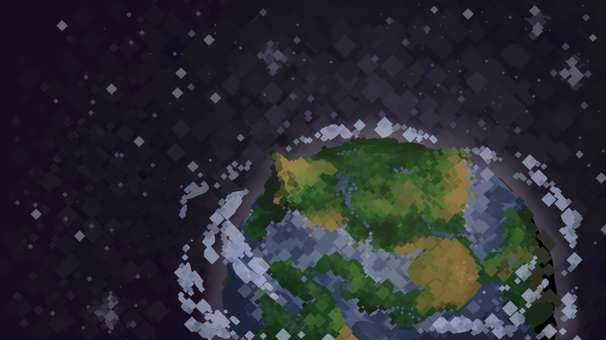
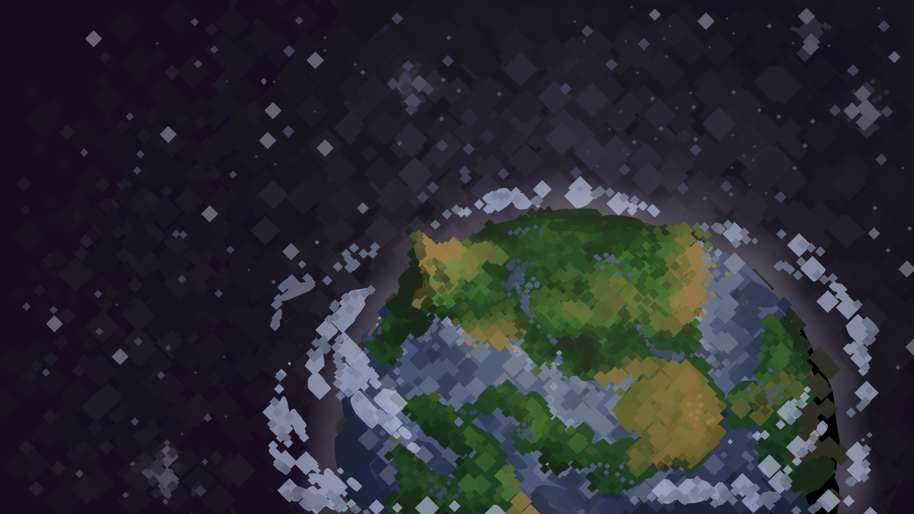

01. Начало разработки
Идея проекта возникла в ходе анализа современных survival-игр. Было принято решение создать игру с глубокой симуляцией экосистем и процедурной генерацией мира.
Разработка компьютерной игры с процедурной генерацией и элементами выживания
ECOllapse — это инновационная одиночная игра, сочетающая в себе элементы выживания, процедурную генерацию мира и симуляцию экосистем. Основное внимание уделено эволюции персонажа и реагирующей на игрока среде. Игрок оказывается в нестабильной биосфере и должен адаптироваться, развивать своего персонажа и выживать в уникальных условиях каждого нового мира.
Проект разработан студентами направления 09.03.02 «Информационные системы и технологии» под руководством Морозовой Ольги Ивановны.
 


Идея проекта возникла в ходе анализа современных survival-игр. Было принято решение создать игру с глубокой симуляцией экосистем и процедурной генерацией мира.
Разработан стек технологий: Unity + C#, система генерации на основе Perlin Noise, алгоритмы поведения существ, скрипты мутаций и интерфейс.
Создан базовый прототип с механикой выживания и эволюции. Проведены первые пользовательские тесты и собран фидбэк для дальнейшей работы.